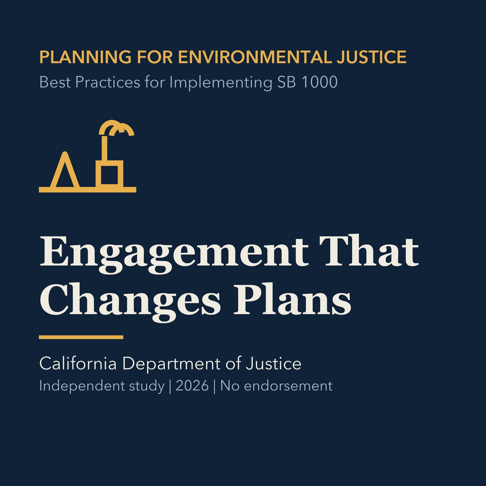

EPISODE 03
Engagement That Can Change the Plan
Designs early, accessible, compensated, transparent engagement that can materially influence analysis and policy.

- Stable GUID
8a2e67e7-7cab-5fe6-8d55-d688d1f060ca- Release
- environmental-justice-land-use-planning-v2026.2
- SHA-256
cb56ab23cfeb4147daa16946408dc998c49dd8425a3ed009b0f5e9879a6a28cb